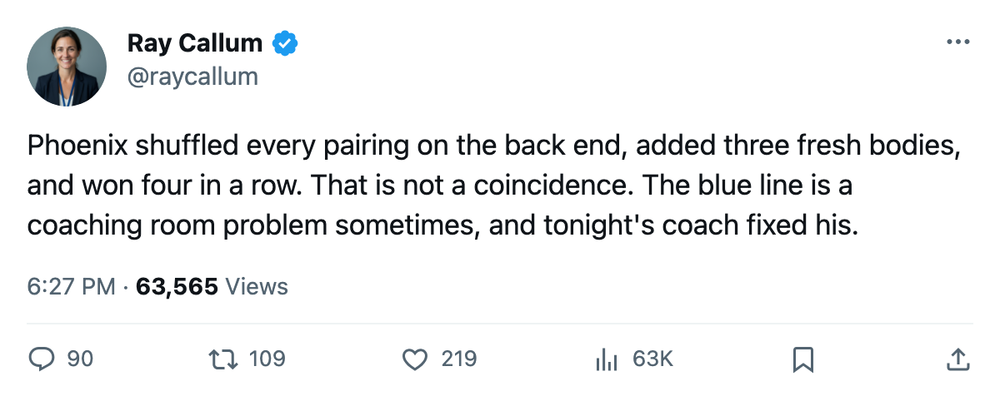

Notes from the West: Phoenix rebuilt its entire blue line, added 3 players, and has won 4 straight
The Coyotes sit 1 point behind St. Louis for 8th in the West, with one more game left to play than the Blues.
 Ray CallumSenior correspondent · Home Ice Network
Ray CallumSenior correspondent · Home Ice Network
The  Phoenix Coyotes Coyotes have won 4 straight, most recently beating
Phoenix Coyotes Coyotes have won 4 straight, most recently beating  Calgary Flames 4-3 on 2005-02-23, and sit 1 point behind
Calgary Flames 4-3 on 2005-02-23, and sit 1 point behind  St. Louis Blues for the 8th and final playoff seed in the Western Conference. The streak followed the most extensive single-cycle reorganization any club has made this season: 18 players shifted in the lineup, 3 names added to the dressing room, 2 dropped.
St. Louis Blues for the 8th and final playoff seed in the Western Conference. The streak followed the most extensive single-cycle reorganization any club has made this season: 18 players shifted in the lineup, 3 names added to the dressing room, 2 dropped.
The overhaul centred on defense.  Drake Berehowsky78 and
Drake Berehowsky78 and  David Tanabe82 entered the lineup.
David Tanabe82 entered the lineup.  Cale Hulse72 and
Cale Hulse72 and  Todd Simpson69 came out. The six remaining defenders reshuffled completely:
Todd Simpson69 came out. The six remaining defenders reshuffled completely:  Paul Mara83 dropped a pairing slot,
Paul Mara83 dropped a pairing slot,  Ossi Vaananen78 slid from the top pair to the second,
Ossi Vaananen78 slid from the top pair to the second,  Brad Ference77 and
Brad Ference77 and  Radoslav Suchy74 swapped sides on the third pair. Not one of the defense pairings that dressed for the previous game survived intact.
Radoslav Suchy74 swapped sides on the third pair. Not one of the defense pairings that dressed for the previous game survived intact.
 Krystofer Kolanos72 also joined the lineup at left wing on the fourth forward line, replacing
Krystofer Kolanos72 also joined the lineup at left wing on the fourth forward line, replacing  Brian Savage79, who was scratched.
Brian Savage79, who was scratched.
One point, one extra game
Phoenix Coyotes has 62 points in 61 games. St. Louis Blues has 63 in 62. Phoenix holds 21 games remaining against St. Louis' 20. The Blues lost 3-2 to Calgary on 2005-02-24, their first defeat after a 5-game winning streak, and the gap between the two clubs is now 1 point with Phoenix holding the extra game in hand.
 Sean Burke88 has started 51 of the Coyotes' 61 games, an 84% share. The veteran won a Vezina Trophy last season and has spent time on the injured list 5 times this campaign.
Sean Burke88 has started 51 of the Coyotes' 61 games, an 84% share. The veteran won a Vezina Trophy last season and has spent time on the injured list 5 times this campaign.
Tonight Phoenix Coyotes hosts  Carolina Hurricanes at America West Arena. The Hurricanes are on a 6-game losing streak and were outscored 33-21 over that stretch. Phoenix trails the season series 0-1, having lost 5-2 in the first meeting.
Carolina Hurricanes at America West Arena. The Hurricanes are on a 6-game losing streak and were outscored 33-21 over that stretch. Phoenix trails the season series 0-1, having lost 5-2 in the first meeting.
St. Louis Blues faces 3 road games in the same window: at  Vancouver Canucks on 2005-02-27, at Calgary Flames on 2005-03-01, and at
Vancouver Canucks on 2005-02-27, at Calgary Flames on 2005-03-01, and at  Edmonton Oilers on 2005-03-04. Phoenix stays home through 2005-02-28 (vs
Edmonton Oilers on 2005-03-04. Phoenix stays home through 2005-02-28 (vs  Mighty Ducks of Anaheim) before visiting
Mighty Ducks of Anaheim) before visiting  Pittsburgh Penguins on 2005-03-04.
Pittsburgh Penguins on 2005-03-04.
The Western playoff line has tightened by the week. Phoenix Coyotes at 62 points is 1 behind St. Louis, 2 behind  Detroit Red Wings at 73, and the clubs below them
Detroit Red Wings at 73, and the clubs below them  Columbus Blue Jackets (60) and
Columbus Blue Jackets (60) and  Los Angeles Kings (60) are 2 back of Phoenix. Five clubs are separated by 5 points for at most 2 spots.
Los Angeles Kings (60) are 2 back of Phoenix. Five clubs are separated by 5 points for at most 2 spots.
